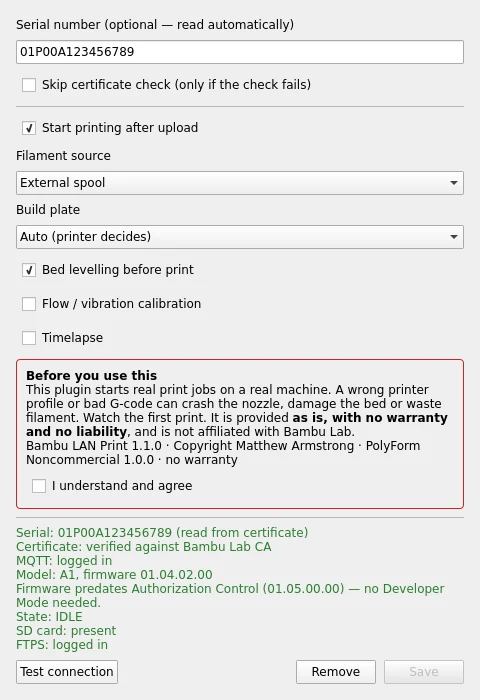
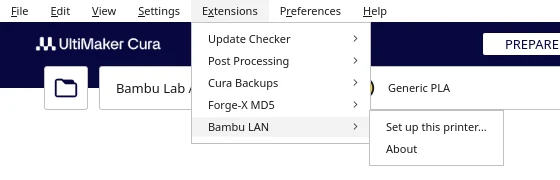
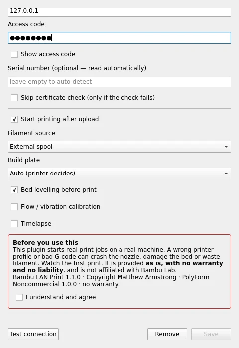
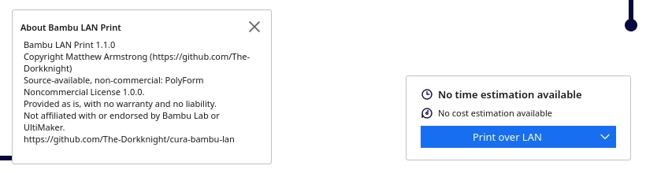
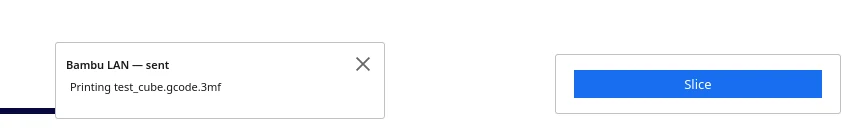

Slice in Cura. Print on your Bambu. No cloud.
A Cura plugin that adds a Print over LAN button: the job uploads to the printer's SD card and starts, over your own network only. Works on older firmware as-is, and on newer firmware with Developer Mode.
Pre-release: tested inside Cura 5.13.0 against a simulated Bambu printer, not yet on real hardware. Watch your first print.

What it does
No cloud
Talks only to the printer on your network, over TLS, using the community-documented LAN protocol. No Bambu account, Bambu Connect or Bambu Studio.
Knows your firmware
Test connection reads the model and firmware, says whether Developer Mode is needed, and picks the right file path for A1, P1, X1 and newer models.
Nothing to install
Plain Python from Cura itself. Checks the printer is idle and has an SD card before uploading, and verifies it's a genuine Bambu printer before sending your access code.
Install
- Download
BambuLAN-<version>.curapackagefrom the Releases page, drag it onto UltiMaker Cura 5.x and restart. - Select your Bambu printer in Cura, then Extensions → Bambu LAN → Set up this printer…
- Find the printer or type its IP, enter the access code from its screen, click Test connection.
- Accept the notice, pick filament source and plate, Save. Slice and click Print over LAN.
Newer firmware (A1 01.05+, P1 01.08.02+, X1 01.08.03+, H2D, P2 series) needs LAN-only mode and Developer Mode on the printer. Older firmware needs neither. Your Cura profile needs Bambu's start G-code: see the README.
Screens




On a real printer


Please note
Provided as is, with no warranty and no liability. This plugin starts real jobs on a real machine: a wrong profile can crash the nozzle or damage the bed, so watch your first print. Not affiliated with or endorsed by Bambu Lab or UltiMaker.